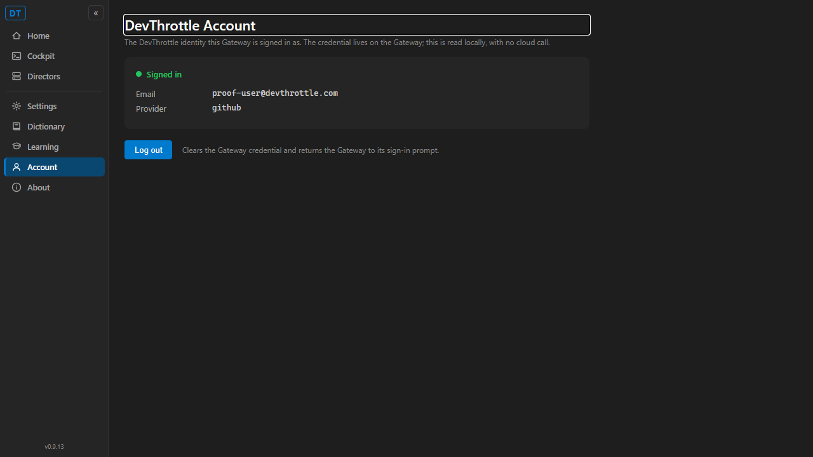
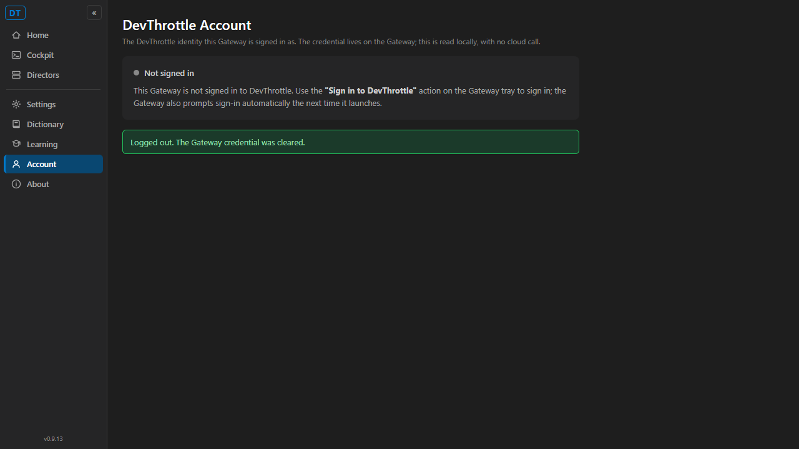

Title: [Cockpit] Account identity + logout move to the Gateway/Cockpit
Branch: issue-648-cockpit-account-logout | Affected containers: CcDirector.Cockpit, CcDirector.Gateway (account endpoints), CcDirector.Gateway.Tests, CcDirector.Gateway.Contracts
POST /account/logout
(src/CcDirector.Gateway/Api/AccountLogoutEndpoint.cs) that CLEARS the Gateway-hosted
DevThrottle credential through the reused DevThrottleAccountService.Logout()
(the same service that already backs GET /account/status, issue #638). The clear is
entirely local - no cloud call. The response echoes the post-logout status
({ "signedIn": false }) and carries no token.GatewayHost.StartAsync directly after AccountStatusEndpoint.Map,
so it inherits the existing host-wide Gateway token middleware (AuthMiddleware) exactly
like every other gateway endpoint.GET /account/status (issue #638) - no duplicate read.
A new shared contract CcDirector.Gateway.Contracts/AccountStatusDto.cs
({ signedIn, email?, provider? }) lets the Cockpit deserialize it; it carries no token
field by construction (security rule DT-05).src/CcDirector.Cockpit/Components/Pages/Account.razor
(route /account), plus an Account nav item in
Components/Layout/NavMenu.razor. It shows the signed-in email + provider when the
gateway holds a credential, a "not signed in" state otherwise, and a Log out button.
Styled to the Cockpit dark VS Code palette (same conventions as About.razor).GatewayClient.GetAccountStatusAsync() and
GatewayClient.LogoutAccountAsync() - the Cockpit talks ONLY to the gateway REST surface,
never a Director directly.src/CcDirector.Gateway.Tests/Account/AccountLogoutEndpointTests.cs (5 tests)
- logout clears the credential and signedIn flips true->false (verified via the live
/account/status); the logout response contains no token; logout is an idempotent no-op
when not signed in; no-credential-service host; and auth-enabled 401 (unauthenticated callers cannot
clear the credential) + authorized 200.| # | Criterion | Expected | Actual | Result |
|---|---|---|---|---|
| 1 | Cockpit shows signed-in email + provider when the gateway holds a credential; a "not signed in" state otherwise. | Signed-in: "Signed in", email proof-user@devthrottle.com, provider github.
Signed-out: "Not signed in". |
Screenshot 01-account-signed-in.png shows exactly that; after logout
02-account-after-logout.png shows "Not signed in". |
PASS |
| 2 | A Log out action clears the gateway credential; afterward the gateway reports
signedIn:false and prompts sign-in again (verified via /account/status
+ the sign-in prompt). |
Before: {"signedIn":true,"email":...,"provider":...}.
After Log out: {"signedIn":false} and the page returns to a "Sign in to DevThrottle"
prompt. |
API before/after captured (ac1-status-before-logout.txt ->
ac2-status-after-logout.txt): true->false. The Cockpit Log out button drives the
same flip and the page shows the "Sign in to DevThrottle" tray prompt + a "Logged out" confirmation. |
PASS |
| 3 | Identity is read LOCALLY on the gateway (no cloud call) and the page NEVER displays the raw token. | Status/logout computed from the cached credential only; no token in any response or on the page. | DevThrottleAccountService.IsLoggedIn()/GetIdentity()/Logout() are local-only (no network
seam on these paths). All three captured bodies contain no "token" substring; the
AccountStatusDto contract has no token field; the page renders only email + provider. |
PASS |
| 4 | Proof shows the identity displayed, then logout returning the gateway to a not-signed-in state. | Before/after screenshots + before/after API bodies. | Both screenshots below; both /account/status bodies captured. |
PASS |
Before logout (GET /account/status):
{"signedIn":true,"email":"proof-user@devthrottle.com","provider":"github"}
Log out (POST /account/logout response):
{"signedIn":false,"email":null,"provider":null}
After logout (GET /account/status):
{"signedIn":false}
None of the three bodies contains a "token" substring - the raw access/refresh token is never returned. The seeded credential lived only in an in-memory store inside a proof harness; the user's real gateway credential was never touched.
Signed in - identity displayed, Log out button present:

After Log out - not-signed-in state, returns to the sign-in prompt:

All 10 account endpoint tests pass (5 new logout + 5 existing status). Full solution build:
Build succeeded. 0 Warning(s) 0 Error(s).
Passed AccountLogoutEndpointTests.Logout_ClearsCredential_SignedInFlipsToFalse_AndNoToken Passed AccountLogoutEndpointTests.Logout_WhenNotSignedIn_IsNoOp_ReportsSignedInFalse Passed AccountLogoutEndpointTests.Logout_NoCredentialService_Returns200_SignedInFalse Passed AccountLogoutEndpointTests.Logout_AuthEnabled_NoToken_Returns401 Passed AccountLogoutEndpointTests.Logout_AuthEnabled_WithToken_Returns200_AndClears Passed AccountStatusEndpointTests.SignedIn_Returns200_WithIdentity_AndNoToken Passed AccountStatusEndpointTests.NotSignedIn_Returns200_SignedInFalse_NoIdentityFields Passed AccountStatusEndpointTests.NoCredentialService_Returns200_SignedInFalse Passed AccountStatusEndpointTests.AuthEnabled_NoToken_Returns401 Passed AccountStatusEndpointTests.AuthEnabled_WithToken_Returns200
No architecture or security drift. This stays within the Gateway Centralization design already recorded
for Phase 2: it reuses DevThrottleAccountService (issue #636) and the existing
GET /account/status (issue #638), adds one sibling gateway endpoint, and surfaces the result
on the Cockpit. Security rule DT-05 (never return/log the raw token) is preserved - the new contract has
no token field and the new log lines record only the outcome.
I believe this is finished.